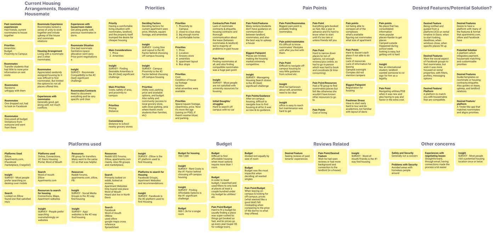

This mobile site is under construction. Please view on a desktop for the full experience.
Spots
Role: Associate Designer @ Design Interactive
Sprint Lead: Synthesis and Ideation
Focus: UX/UI
Duration: 6 weeks
Tools: Figma, Notion, Goodnotes
Read Time: 5-7 Minutes
More Than a Move, The Strain of Student Housing
Spots is a socially-driven platform designed to simplify the search with a mix of peer-to-peer listings, vetted local properties, helpful insights, and a supportive student network.
Designed over six weeks by a team of four designers and one project manager, this case study walks through my end-to-end UX process, from early research and ideation to prototyping and high-fidelity design.
Understanding the Problem: College students struggle to find affordable, safe, and convenient off-campus housing, especially when they’re new to a city.
Initial Findings
We began with competitive and comparative research (Zillow, Airbnb) and found...
Key Strengths:
User-Intuitive Layout
Comprehensive Information
Key Weaknesses:
Missing Leasing Dates
Limited Communication Tools
Opportunities for Improvement:
FAQ Integration
We then conducted interviews with 64 students. From these insights, we identified key needs like affordability, clarity, and social connection.
80%
Pricing
Participants mentioned affordability as a major challenge in finding housing.
73%
Proximity
Surveyors stated proximity to campus as a deciding factor.
90%
Application Type
Surveyors preferred using desktop websites for housing searches.
40%
Word of Mouth
Surveyors stated they find housing opportunities through word of mouth.
Synthesis & Ideation
During our team meeting, I facilitated a collaborative walkthrough of both our quantitative data and our insights from user interviews and observational research.
Affinity Mapping
I led synthesis and ideation, insights that reflected shared student needs and frustrations. We identified five core focus areas: pricing, accessibility, comparability, transparency, and community.

User Persona
Lo-Fi Sketches
I organized a sketching session where each team member ideated wireframes and shared ideas based on user insights. This collaborative process shaped our first draft of the content structure and layout.
User Flows
During the pre-prototyping stage, we created a user flow by synthesizing research insights and sketches to define the core tasks users would complete within Spots.
Mid-Fi Frames
User Testing
We conducted user testing on our mid-fidelity prototype with 5 participants and found these to be the most apparent user challenges:
The Good:
Poor CTA Placement: The “Post a Listing” button felt intrusive and unclear.
Underplayed Social Element: Our unique value, student social interaction, wasn’t initially front and center.
The Bad:
Direct landlord access: Simplified communication with verified property owners
Localized student networking: Easy connection with local peers for shared housing needs, fostering community engagement
Stronger Focus: Making My Feed the homepage highlighted our platform’s unique social features
User-Driven Iteration: Feedback directly shaped layout and content changes
Design Standards
The Solution
A centralized platform that connects students to verified listings, offers rental education, and simplifies the housing search.
Onboarding
A compatibility quiz personalizes the experience from the start, matching users with ideal roommates and listings based on lifestyle, preferences, and housing needs.
My Feed
A dynamic feed of student posts, complete with compatibility scores, listing links, and messaging, creating an interactive hub for exploring and sharing housing options.
Properties
A map-based view of housing listings with filters, student reviews, detailed amenities, pricing breakdowns, and direct contact with landlords, everything in one place.
Profile
A centralized space to manage preference results, saved listings, posts, and personal info, empowering users to refine their matches and keep track of their housing journey.
Create a Post
A smart, adaptive form that guides users based on what they’re looking for, whether it’s a roommate, tenant, or place to live, making it easy to share housing needs.
Conclusion and Highlights
Reducing User Friction
By focusing on intentional feature prioritization, continuous user feedback, and cohesive design systems, Spots minimized the emotional and cognitive burden of the student housing journey. The result: a more intuitive, visually aligned, and student-informed experience.
Operational Efficiency
Through automation of key workflows and personalized listing feeds — guided by an onboarding quiz — Spots significantly shortened the time it took students to find housing that fit their preferences, lifestyle, and compatibility.
Community Building
More than just listings, Spots became a digital campus for students. Forums and interest-based groups let users post about available properties, find housemates, sell or swap furniture, give reviews, and trade advice. These community-driven features added trust, transparency, and a human element to the platform — creating real value beyond just functionality.
Awarded
üèÜ Most Customer-Centric UX, Spots was recognized by industry professionals for its thoughtful execution and practical innovation. Judges praised the platform‚Äôs emotional intelligence and usability, with many saying they‚Äôd use it themselves. The feedback validated our goal: designing a platform centered around how students actually live, search, and connect.